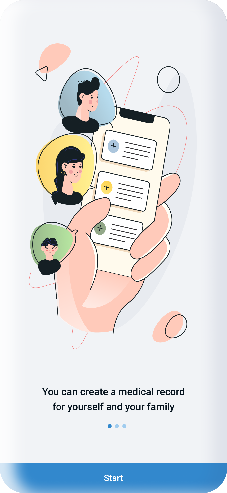
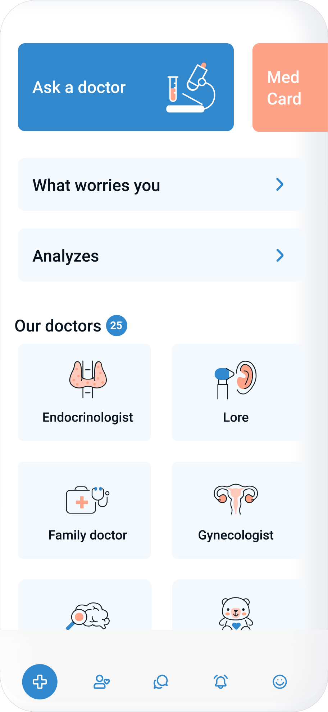

DobroDoc+
Lead UX — user interviews, IA, mobile prototyping
Redesign cut time-to-booking by 40% in usability tests

01 — Problem & Context
Booking was harder than the illness
DobroDoc+ already existed — but the original app was outdated and frustrating to use. Booking a doctor's appointment required more effort than the illness itself.
The core pain: when you're sick, the last thing you want is to navigate a broken interface or travel to a clinic just to get in the queue. Busy adults needed a way to see a doctor without leaving home.
The goal was a full redesign — faster booking, clearer navigation, and an experience that works when you feel your worst.
02 — Process
From audit to handoff
1.0
UX Audit
Analysed existing app — broken flows, inconsistent patterns, key drop-off points.
Audit report2.0
User Research
Interviewed busy adults about medical apps and clinic visits.
Interview notes3.0
UX Strategy
Defined redesign priorities. Goal: booking under 3 taps, eliminate redundant screens.
Strategy doc4.0
Wireframes
Redesigned core flows — booking, doctor search, medical history.
Lo-fi wireframes5.0
Usability Study
Two rounds — lo-fi and hi-fi — with busy adults.
Usability report6.0
Mockups & Hi-fi
Full visual redesign with new component library.
Hi-fi prototype7.0
Hand-off
Specs, annotations, component documentation.
Figma handoff03 — Artifacts: UX Strategy
Strategic foundation
| Vision | Accessible telemedicine platform for everyone, regardless of location or schedule |
| Project stage | Full product development and launch |
| Business goals | 1. Reduce clinic overcrowding by 30% 2. 50,000 users within first 6 months 3. 90%+ patient satisfaction 4. Subscription + per-consultation revenue |
| User goals | 1. Book without calling during business hours 2. Consult online for minor concerns 3. Access medical history in one place 4. Manage family appointments |
| Design principles | Trust & Security · Simplicity · Empathy · Reliability · Accessibility |
| Success metrics | Booking completion > 85% Video success rate > 95% NPS > 70 Avg booking time < 3 min |
03 — Artifacts: Research & Discovery
Understanding the users
01
Stakeholder interviews
7 stakeholders: Medical Director, COO, Head of Product, Compliance Officer.
02
Surveys
250 patients and 35 healthcare providers. 84% wanted online consultations. 73% found traditional booking inconvenient.
03
User interviews
15 patients + 8 doctors, 60-min sessions.
03 — Artifacts: User Flow
Multi-scenario flow
Overview flow covering 5 user scenarios: symptom search, appointment booking, video consultation, consultation history, and medical certificates.
04 — Mockups
Key screens in the redesign
Final hi-fi mockups covering the core booking flow — from onboarding to appointment confirmation.

OnboardingOnboarding — create a medical card for yourself and your family

HomeHome — clinic dashboard with doctor categories and quick actions